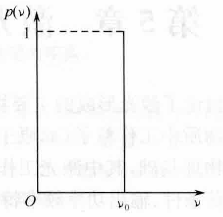
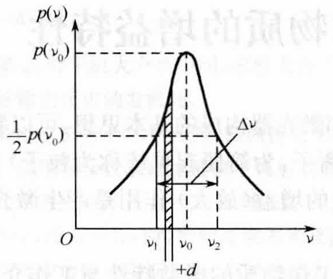
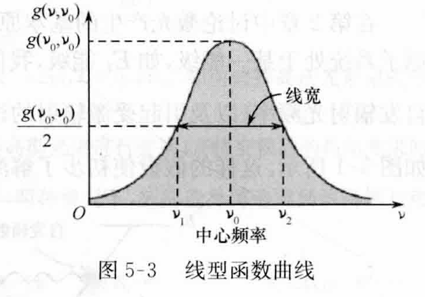

用于描述相对光强在不同频率上的分布.

设某条光谱线总光强为\(I_0\)，频率\(\nu\)附近单位频率间隔\(\mathrm{d}\nu\)内的光强为\(I(\nu)\).
则在频率\(\nu\)附近单位频率间隔\(\mathrm{d}\nu\)内的相对光强为：
$$f(\nu) = I(\nu)/I_0$$\(f(\nu)\)表示某一谱线在单位频率间隔内的相对光强分布，称为光谱线的线型函数.
实际上，自发辐射所释放的光谱线并非严格的单色光（即单一频率），而是具有一定的频率宽度.


由于种种因素的影响，该自发辐射的功率（或光强）分布在以其跃迁波尔频率\(\nu = \frac{E_2-E_1}{h}\)为中心的小频率范围内，\(\nu_0\)称为中心频率.
可以用单色辐射功率\(P(\nu)\)来描述这一分布规律.
发光粒子在频率\(\nu\)处，单位频率间隔内的自发辐射功率.
在中心频率\(\nu_0\)处，单色辐射功率最大；偏离中心频率时，单色辐射功率便按一定规律衰减.
为定量描述光谱线的加宽特性，引入线型函数与线宽的概念.
光谱线的线型函数与线宽对激光器输出激光的相干性及增益、模式、功率等均有影响.
若自发辐射的总功率为\(P\)，则频率分布在\(\nu\sim\nu + \mathrm{d}\nu\)内的功率为\(P(\nu)\mathrm{d}\nu\)，且：
$$P = \int_{-\infty}^{+\infty}P(\nu)\mathrm{d}\nu$$则光谱线的线型函数定义为：
$$g(\nu,\nu_0) = \frac{P(\nu)}{P}$$其量纲为秒.
显然，线型函数是归一化的，即：
$$\int_{-\infty}^{+\infty}g(\nu,\nu_0)\mathrm{d}\nu = 1$$线型函数半极值点对应的频率宽度.

引起谱线加宽的物理原因：
由于发光粒子的激发态能级具有有限寿命引起的自发辐射谱线加宽.
自然加宽线型函数与线宽分别用\(g_N(\nu, \nu_0)\)与\(\Delta \nu_N\)表示.
[注]自然加宽无法避免.
具有上述表达式的线型函数称为洛伦兹型函数，相应的光谱曲线称为洛伦兹型曲线.
自然加宽的线型函数为洛伦兹型函数，即：
$$g_N(\nu, \nu_0) = \frac{\frac{\Delta \nu_N}{2\pi}}{(\nu-\nu_0)^2 + \left(\frac{\Delta\nu_N}{2}\right)^2}$$为什么等效能级寿命问题就可以采用洛伦兹型函数描述？
碰撞引起的光谱线加宽.
其线型函数与线宽分别用\(g_L(\nu, \nu_0)\)与\(\Delta nu_L\)表示.
碰撞加宽可以采用洛伦兹型函数描述：
$$g_L(\nu, \nu_0) = \frac{\frac{\Delta \nu_L}{2\pi}}{(\nu-\nu_0)^2 + \left(\frac{\Delta\nu_L}{2}\right)^2}$$| 光谱线的加宽 | 均匀加宽 | 自然加宽 |
| 碰撞加宽 | ||
| 非均匀加宽 | 多普勒加宽 |
引起加宽的物理因素对每个粒子都是等同的，自然加宽机制中大量粒子中的每一个都有相同的平均寿命；碰撞加宽中，大量粒子中的每一个都有相同的受到其他粒子碰撞的机会.
光源中每个发光粒子由于某种物理因素的影响而使光谱线加宽，但中心频率保持不变，且所有发光粒子的谱线加宽完全一样.
这样，整个光源的光谱线中心频率仍与单个发光粒子的中心频率一致，而且整个光源的光谱线的线型函数和线宽与单个发光粒子的线型函数和线宽相同.
二者都是光辐射偏离简谐波，这种偏离引起了谱线的加宽.
在自然加宽机制中，粒子发射电磁波的振幅不断衰减而偏离简谐波；在碰撞加宽机制中，粒子间的碰撞使得粒子的发射电磁波突然中断，从而偏离简谐波.
在这类加宽中，每一粒子的一次发光对谱线内的所有频率均有贡献.
在均匀加宽中，不能将某一特定发光粒子与\(g(\nu,\nu_0)\)中某一频率联系起来.
用于描述相对光强在不同频率上的分布.
设某条光谱线总光强为\(I_0\)，频率\(\nu\)附近单位频率间隔\(\mathrm{d}\nu\)内的光强为\(I(\nu)\).
则在频率\(\nu\)附近单位频率间隔\(\mathrm{d}\nu\)内的相对光强为：
$$f(\nu) = I(\nu)/I_0$$\(f(\nu)\)表示某一谱线在单位频率间隔内的相对光强分布，称为光谱线的线型函数.
光谱的线型和宽度与光的时间相干性直接相关.
光谱的线型和宽度对许多激光器的输出特性（激光的增益、模式、功率等）都有影响.
原子发光是有限波列的单频光，因此仍有一定的频带宽度.
有限波列\(\Rightarrow\)有一定带宽
这意味着原子发射的不是恰好为某一频率\(\nu_0\)（满足\(h\nu_0 = E_2 - E_1\)）的光，而是发射频率在\(\nu_0\)附近某段范围内的光.
判定同一条谱线：
同一对能级上发生的辐射跃迁辐射出的光对应同一条谱线
e.g.从\(E_x\)自发辐射与受激辐射到\(E_n\)所发出的光对应同一谱线.
不同谱线的带宽不一定相同.
对于同一个谱线而言，不同频率对应的光强相对强度不一样.
线型函数在\(\nu_0\)处达到最大值，而在\(\nu_1\)及\(\nu_2\)处，有：
$$f(\nu_1) = f(\nu_2) = \frac{1}{2}f(\nu_0)$$定义\(\Delta\nu = \nu_2 - \nu_1\)，即相对光强为最大值\(1/2\)处的频率间隔，为光谱线半宽度.